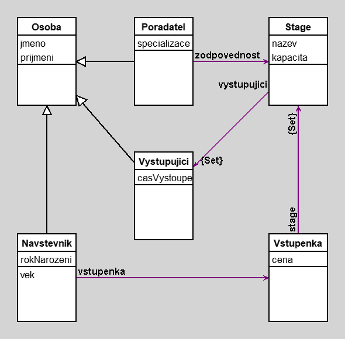

Cviceni 2
author(s): Stepan Pesout
Ukazkovy projekt ze cviceni 2
Workspace
Workspace Objects
Script
v1 := Vystupujici new.
v1 jmeno: 'Pepa'.
v1 prijmeni: 'Smutny'.
v1 casVystoupeni: '22:00'.
v2 := Vystupujici new.
v2 jmeno: 'Honza';
prijmeni: 'Vesely';
casVystoupeni: '23:00'.
s1 := Stage new.
s1 nazev: 'Hlavni stage'.
s1 kapacita: 1000.
s1 vystupujici add: v1; add: v2.
s2 := Stage new.
s2 nazev: 'Vedlejsi stage'.
s2 kapacita: 500.
s2 vystupujici add: v2.
p1 := Poradatel new.
p1 jmeno: 'Jirka'; prijmeni: 'Novak'; stage: s1.
vs1 := Vstupenka new.
vs1 cena: 1500.
vs1 stage add: s1; add: s2.
n1 := Navstevnik new.
n1 jmeno: 'Adela';
prijmeni: 'Novotna';
rokNarozeni: 2004;
vstupenka: vs1.
Diagram

Classes
Osoba
|
instance variables
jmeno :String
prijmeni :String
|
methods
celeJmeno
initialize
jmeno
jmeno:
prijmeni
prijmeni:
|
|
|
code of non-accessing methods:
Vystupujici
|
instance variables
casVystoupeni :String
|
methods
casVystoupeni
casVystoupeni:
initialize
|
|
|
code of non-accessing methods:
Poradatel
|
instance variables
specializace :String
stage :Object
|
methods
initialize
specializace
specializace:
stage
stage:
|
|
|
code of non-accessing methods:
Navstevnik
|
instance variables
rokNarozeni :Number
vstupenka :Object
|
methods
initialize
rokNarozeni
rokNarozeni:
vek
vstupenka
vstupenka:
|
|
|
code of non-accessing methods:
Stage
|
instance variables
kapacita :Number
nazev :String
vystupujici :Set
|
methods
initialize
kapacita
kapacita:
nazev
nazev:
vystupujici
|
|
|
code of non-accessing methods:
Vstupenka
|
instance variables
cena :Number
stage :Set
|
methods
cena
cena:
initialize
stage
|
|
|
code of non-accessing methods:
Links
Data file and
class source.
Generated by Daskalos - Object Modeling Tutor (C) 2006 V. Merunka
March 1, 2024